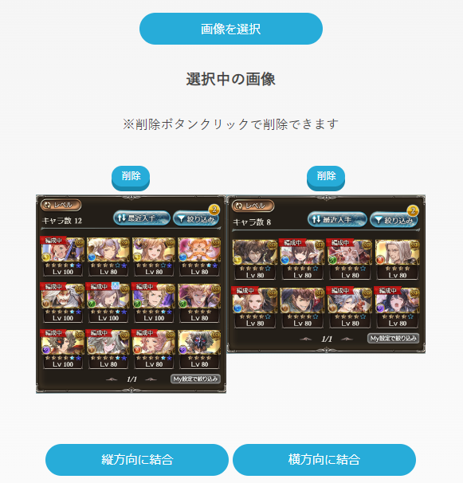
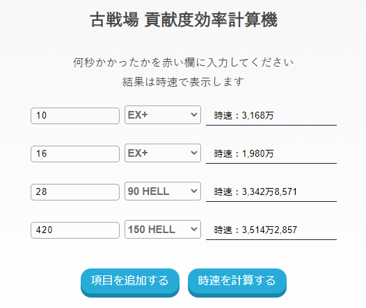
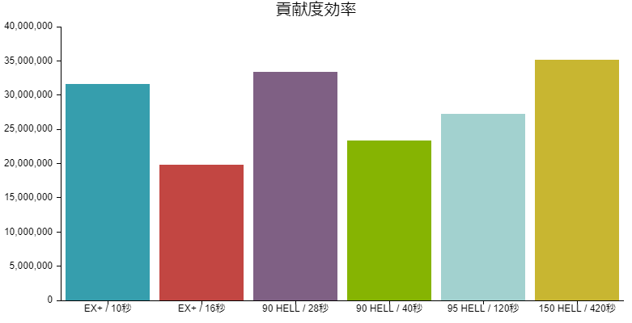
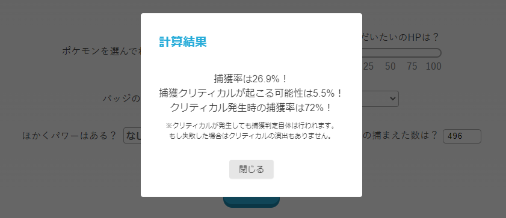

TOOLS
便利ツール
以下サイトは全て私が作成したもので、GitHubの機能によりアクセス出来る状態となっています。
※常識の範囲内での使用/共有と、サイトに関するコードの無断転載/流用はおやめください。
(web制作の勉強目的でのコードの流用は私的利用に限り可能です)
ローカル上の画像や、クリップボードの画像を縦・横に連結して保存できます。
ゲームで所持アイテムやキャラを友達に見せる時に便利…かも。

グラブルの"古戦場"イベントの効率を計算して比較できます。
グラフの表示と保存にも対応しています。
また、ポケモンsvの捕獲率も計算出来ちゃいます。便利。


